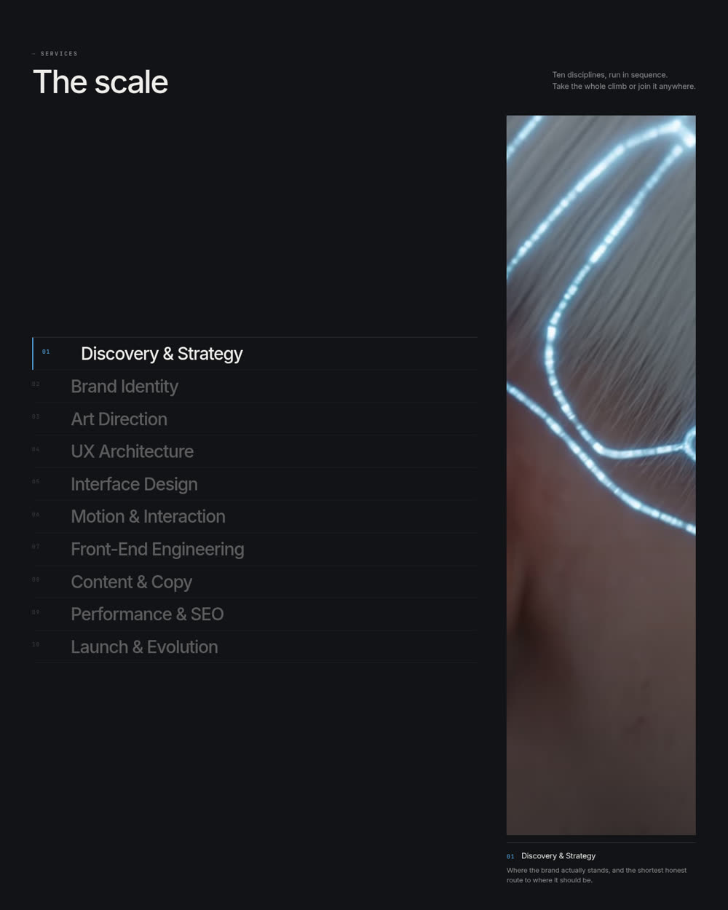

Case study 01:
this website.
A new studio has a portfolio problem, and there are two ways to answer it. One is to fill a page with work you have not done. The other is to build the most demanding thing you can and let people take it apart. This is the second.
- Project
- naughttoten.ie
- Role
- Everything
- Built
- August 2026
- Stack
- Hand-written HTML, CSS, JavaScript
—The brief
Make the hardest possible case for the studio, in the studio's own voice.
Everything on this site had to do two jobs at once: say what Naught to Ten does, and be an example of it. A studio that sells attention to detail cannot ship a site with sloppy detail. A studio that sells fast websites cannot ship a slow one.
That is a useful constraint, because it makes the claims checkable. Nothing below asks you to take our word for it — open your browser's developer tools on any page here and verify it yourself.
—The hero
Scroll drives a film, frame by frame.
The home page opens on a six-second film that does not play — you scrub it. It was decoded ahead of time into 145 stills, and scroll position picks which one gets painted to a canvas.
That is deliberately not a <video> element with its playhead moved. Video seeking snaps to the nearest keyframe on mobile Safari and stutters badly. Painting decoded stills is frame-exact on every device, at the cost of an upfront download — which is the problem the next section is about.
The counter ticks 0.0 to 10.0 as the camera pulls back from a detail you cannot read to a finished figure looking straight at you. That is the entire brand argument, made without a sentence of copy.
—The hard part
A 6 MB hero that still loads on a bad connection.
The first version held the page behind all 145 frames before showing anything. On a throttled 1.6 Mbps connection — a realistic Irish mobile floor — that took 16.6 seconds and 3.3 MB before a visitor saw a single pixel. No amount of clever markup rescues a number like that.
The fix was to stop treating the sequence as one object. The loader now releases the page after the first 24 frames and keeps fetching the rest behind it, while the scrubber paints the nearest frame it already has, so scrubbing never blanks out.
Measured in headless Chromium at 390×844 with the network throttled to 1.6 Mbps down and 150 ms latency.

—Decisions
What the site does not do.
- No cookies, no analytics, no trackers. There is no cookie banner because there is nothing to consent to. That is a design decision as much as a privacy one — banners are the ugliest thing on most websites.
- No third-party requests. Fonts, images and video are all served from this domain. Loading a page here contacts nobody else's server.
- No framework and no build step for the site itself. The pages are hand-written. There is no bundler to keep alive, and nothing to break when a dependency updates itself in two years.
- It works without JavaScript. Turn it off and every page still shows its content — you lose the animation, not the site.
- It respects reduced motion. If your device asks for less movement, the grain, the drift and the reveals all switch off.
—Details
The parts nobody is meant to notice.
The wordmark is real vector artwork, generated from the same font files the site uses and converted to outlines, so it scales anywhere and needs no fonts installed. The share card and app icons come out of the same script.
Masked line reveals carry vertical slack, because display type set below a line-height of 1 gets its descenders sliced by the mask otherwise. The service index has a fixed height so ten rows can never overflow the pinned viewport. The scroll loop re-arms itself while values are still easing, because scroll events stop the instant the wheel does — without that, the canvas holds a stale frame.
None of this is visible when it is right. All of it is visible when it is wrong.
—Check it yourself
Four things you can verify in a minute.
- 01Open developer tools, go to the Network tab and reload. Every request is to this domain.
- 02Look at Application → Cookies. It is empty.
- 03Disable JavaScript and reload. The content is all still there.
- 04Run Lighthouse on any page and see what it says.
Case study 02 is yours.
This is the only project on the site, and it is the only one that will be here until there is real client work to show. When there is, it will appear here with the client's name on it and their permission to use it.
Want this kind of attention on your site?
Start a project